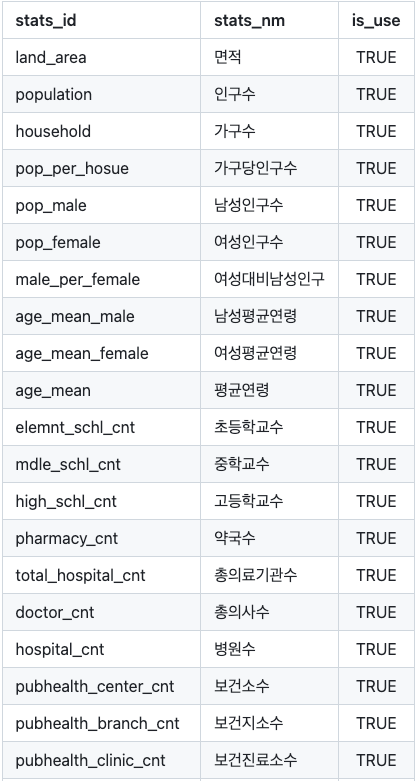

devtools::install_github("bit2r/bitSpatial")bitSpatial 소개
bitSpatial 소개
bitSpatial 정의
- 통계지리정보(SGI; Statistical Geographic Information) 개발을 위한 R 패키지
- 광역시도 > 시군구 > 읍면동 레벨의 행정구역 경계 수치지도에 공공데이터를 집계
- 이를 시각화하는 일련의 리소스를 제공
- Title: Tools for Spatial Analysis in Korean Regions
- Author: Choonghyun Ryu
- Maintainer: Choonghyun Ryu choonghyun.ryu@gmail.com
- GPL-2.0 license
- URL: https://github.com/bit2r/bitSpatial
bitSpatial 설치
제공하는 리소스
- 광역시도 > 시군구 > 읍면동 레벨의 행정구역 경계 수치지도 제공
- 수치지도를 sf 객체로 가공하여 제공 (매년 6월 기준으로 배포)
- 17 광역시도
- 250 시군구
- 3,528 읍면동
- 수치지도와 결합한 행정구역별로 집계된 통계
- 40개 통계
- 인구통계, 초중고 학교 통계, 병원/약국 통계
- 집계 통계는 계속 추가할 예정
- 수치지도와 조인할 수 있는 집계된 통계
- 성별/연령대별 인구수
- 수치지도와 조인할 수 있는 위치정보 데이터
- 초중등학교 위치 데이터
- 약국/병원 위치 데이터
- 상가 위치 데이터
지리 기반 연산을 위한 기능
- 위치 좌표 기반 연산
- 두 좌표의 거리 구하기
- 경위도 좌표계 위치정보의 좌표계 변환
- 지리기반 집계를 위한 메타
- 우편번호 행정동 매핑 데이터
- 위도/경도로 행정구역 코드와 이름 가져오기
SGI 시각화를 위한 기능
- 주제도 시각화
- 최적 지도 이미지 사이즈 계산
- map 시각화용 ggplot2 테마
리소스의 원천
- 통계청의 통계지리서비스에서 배포하는 지역경계 수치지도
- 행정동 기준의 지역경계 수치지도
- 광역시도 > 시군구 > 읍면동 레벨의 지역경계 수치지도
- 광역시도 > 시군구 > 읍면동 레벨의 지역경계 수치지도
- 매년 주기적으로 배포하는 장점으로 선정
- 매년 6월 기준으로 배포
- 행정동 기준의 지역경계 수치지도
- 인구통계
- 행정안전부의 주민등록 인구 통계
- https://jumin.mois.go.kr/index.jsp
- 초중고 학교 위치 정보
- 공공데이터포털의 전국초중등학교위치표준데이터
- https://www.data.go.kr/data/15021148/standard.do?recommendDataYn=Y
- 병원 및 약국 위치 정보
- 공공데이터 포털의 건강보험심사평가원_전국 병의원 및 약국 현황
- https://www.data.go.kr/data/15051059/fileData.do
- 상가 위치 정보
- 공공데이터 포털의 소상공인시장진흥공단_상가(상권)정보
- https://www.data.go.kr/data/15083033/fileData.do
제공하는 통계
